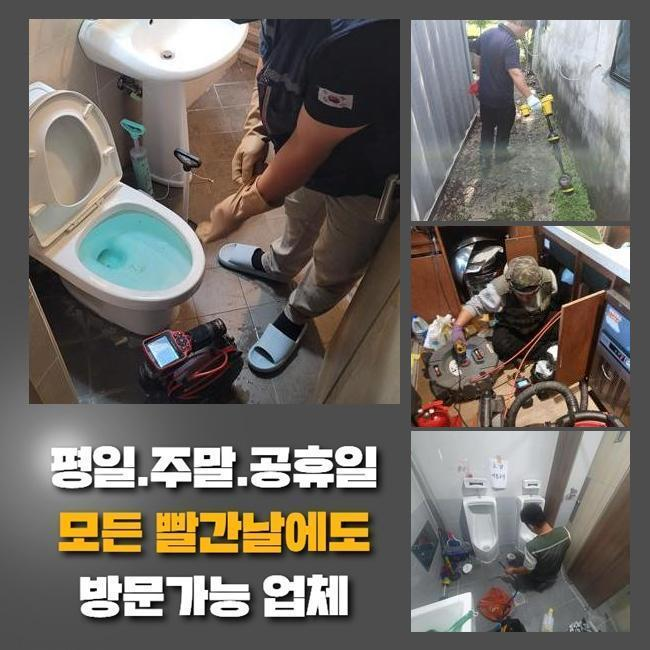
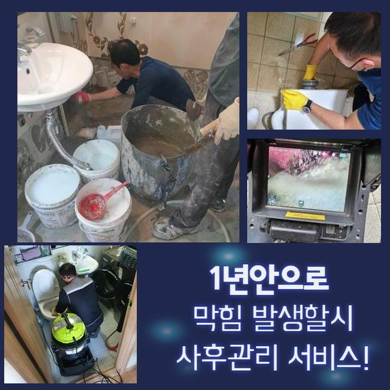
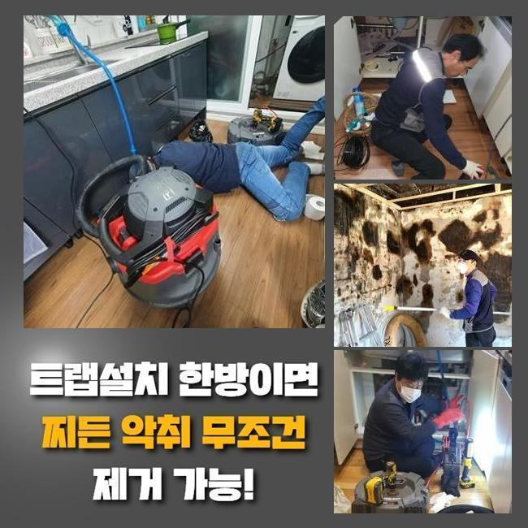
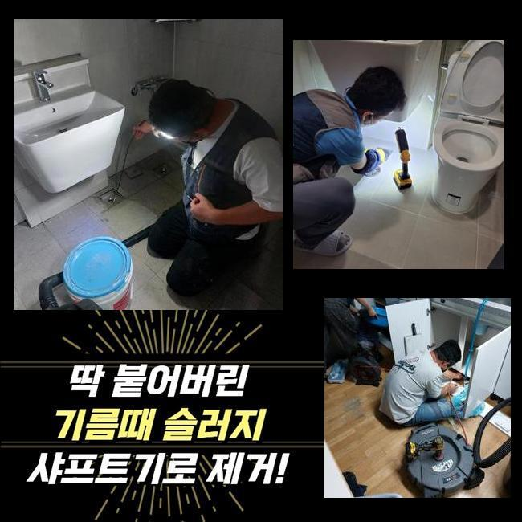
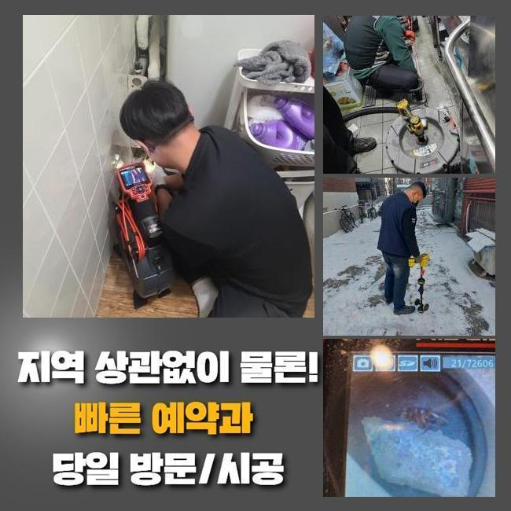
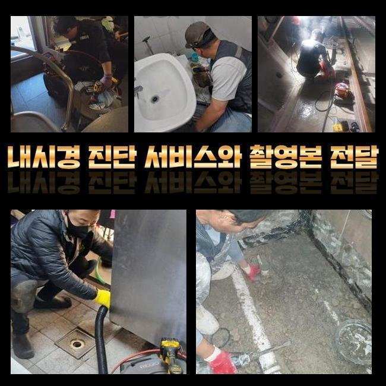

🏠 갈현동씽크대막힘 별양동 고압세척비용 누수
용인 싱크대막힘 전문 시공 후기

📋 작업 개요
- 위치: 용인
- 서비스 유형: 싱크대막힘, 배관막힘, 누수수리, 역류해결, 뚫는업체, 고압세척
- 작업 일시: 2025. 1. 12. 10:01
- 업체명: 하수구수사대 (010-5615-2118)
🔍 문제 상황
갈현동씽크대막힘 별양동 고압세척비용 누수
세탁실이나 욕실은 우리 일상의 필수인 곳이죠
그러하기에 생활하다 갑작스레 물빠짐이 안된다면 불편은 엄청날 것입니다
그러나 배수와 관련한 문제들을 크게 신경쓰지 않으시는 의뢰인분들이 많더라고요
시간이 지난뒤 없어져버리거나 추가적으로 문제가 생기지는 않을거라고 믿기 때문이랍니다
하지만 실제는 그렇게 돌아가지 않죠
이에 초반에 적절하게 소제한다면 심각한 정황을 막을수 있죠
배수기능이 저하되었다는건 하수관의 특정 지점에 흐름성에 장애를 일으키는 찌꺼기가 있단 소리죠
찌꺼기가 또 누적되어서 한층더 힘겨운 장애로 발달하기전 배관전문가에게 의뢰해서 조사를 시행한뒤에 세척해나가야 하죠
5일전 방문하였던 데를 세밀하게 말씀해드리도록 하겠습니다
배관 정체상황으로 전문가를 찾으시는 이웃님들께 도움이 되었으면 해요
저희팀이 내방한 곳은 빌딩 안에 위치한 음식점이에요
의뢰인께서는 욕실배관과 주방배수시설까지 점진적으로 배수기능이 마비되었다고 말씀하셨죠

🔎 원인 분석
💡 전문가 진단: 정밀 진단 장비를 사용하여 슬러지의 고착 여부를 판명하고 타격/세척 작업을 실시했습니다.
전적으로 고장나버린건 아니었고 얼마지나면 소멸되었기에 나중에 처리하자 생각하고 지속해서 쓰셨다고 합니다
그래서 결국에는 이물의 양이 증대되어서 배수가 멈추었고 오취와 역류증세까지 일어나게 된거죠
배관구조는 난해하고 비좁은 길목으로 되어있어요
따라서 표면적으로 볼때에는 노폐물이 얼마나 있나 간파하기 어려워요
그러하기에 현장으로 이동하기 전에는 내시경설비를 꼭 챙겨두어야 합니다
내시경기기의 안에는 방수카메라가 있죠
그것으로 직관이 힘든 배수관 안까지 세밀하게 검사가 가능한것이며 찌꺼기의 특성과 대략적인 양까지 알수있죠
이것으로 확인해본 배수관 내부는 상당히 지저분했습니다
머리카락 등과 여러가지의 노폐물들이 누증된 상태였죠
이런 오염물질들이 엉겨서 돌처럼 굳은 모습을 보였기에 좁아진 관로구멍을 가로막아 물빠짐이 올바르게 되지 않았어요
이것을 방치해버린다면 사이즈를 증대시키면서 관로에 하중을 가할수 있죠
그렇게 된다면 더더욱 정황이 나빠지는 것이기에 신속하게 시공하기로 했어요
해당 사태에 이용하는 도구는 샤프트입니다

🔧 작업 과정
비좁은 틈도 쉽게 진출가능한 장점이 있습니다
노즐끝단엔 체인사슬이 결속되어 빠르게 회전하며 관로안에 상존하는 단단해진 다양한 찌꺼기들을 바스러뜨리게 되죠
이어서 샤프트 분쇄작업을 시행하였는데요
전동기기와 노커를 연결하고 나서 샤프트기기를 가동시켜 벽면에 붙은 찌꺼기들을 소멸시키기 시작하였죠
어떤곳에 찌꺼기들이 모여있는지도 간파해야 돼서 내시경cctv를 통한 검사도 동반진행 하였어요
해당 기기로 누증량이 많은데를 기점으로 세척해 나간다면 한층 빨리 진행할수가 있는거죠
배수관 안쪽면이 손상되는일이 없게끔 신중한 자세로 이물질만 정확히 조준하여 분쇄를 해나갔죠
만약에 시공하는 도중 관로에 무리한 힘을 주면 크랙이 일어나 누수증상이 생길수도 있답니다
그러하기에 내시경cctv나 샤프트기기 등이 구비되는 것이 중요하겠으나 작업자의 기술수준도 훌륭해야 하겠죠
이물들이 누적된 구간을 정결하게 정비하고나서 작은 조각들까지 제거해주었어요
그리고 바로 점검에 들어갔는데요
수돗물을 양동이에 담아 일시에 배수문으로 흘려보냈고 흐름이 지체되거나 역류현상은 없는지를 진단했답니다
별다른 특이사항은 없었으므로 즉각 인접한 배수시설로 건너가게 되었네요
이쯤하고 마감한다면 몇달간 이용하시기에는 괜찮겠으나 나중에 정체가 나타날 확률이 있어서였답니다
욕실쪽의 배수관과 결속된 메인배관도 점검하여 정체의 근본 동기를 알아내기로 결정했죠
화장실 배수관에서 체증이 일어났을때 관련된 메인관까지 찌꺼기가 적층되었을 가망성이 높기에 전체적인 하수관 세척작업을 시행하는게 합당합니다
따라서 횡주배관으로 간뒤 검사를 세부적으로 진행하였고 저희들의 예측대로 고착화된 이물들을 목견하게 되었네요
횡주배관 및 그와 연결된 파이프들까지 전면적으로 분쇄공정을 시행했고 찌꺼기가 제거된 청결한 관로를 포착할수가 있었어요
플라스틱 등의 녹아내리기 힘든 쓰레기들은 샤워나 세안을 하시면서 다시 쌓일 수 존재하는데요
그러하기에 일년에 한두번은 배관전문가를 통해 관리하시는게 좋답니다
또 장기간 하수관을 보호하는 방책들도 저희들의 지식선에서 상냥하게 말씀드렸습니다


✅ 작업 완료
하수관에 장애가 발발한다면 여러가지의 곤란을 맞닥뜨리게 되니 초기에 그런 상황까지 발전하지 않게끔 섬세하게 방예를 해주는게 좋겠죠
토요일이나 주말에도 내방가능하다는 것도 알려드렸고요
구축 아파트에서는 누수증세도 빈번히 발발하기에 그것과 관계된 의뢰도 많은 편이죠
이에 곧바로 뚫음뿐만 아니라 누수작업도 한다는 사실을 설명드렸어요
어느위치에서 물막힘이 일어났으며 언제 시작되었는지 간략하게 전달해주시면 더더욱 신속하게 견적을 드릴수 있답니다
또한 예약시간에 맞춰 배관전문가가 전용기구들을 소지한채 출동하고 있사오니 필요시 연락주시길 당부드려요




⚠️ 베란다 누수 및 방수 관리 방법
- ✅ 비가 많이 올 때 창틀 주변이나 아래층 천장에 얼룩이 생기는지 정기적으로 확인해 보세요.
- ✅ 우수관 주변 실리콘 마감이 들뜨거나 깨진 틈새가 있는지 손상 여부를 수시로 체크하세요.
- ✅ 베란다 바닥 타일의 줄눈(메지)이 소실되면 그 틈으로 물이 침투하여 누수가 유발됩니다.
- ✅ 누수 의심 증상 발견 시 방치하면 아래층 손실이 커지므로 즉시 전문가의 진단을 받으십시오.
💡 핵심 정리
- 확실한 장비 작업(내시경 점검 및 샤프트 스케일링)으로 원인을 뿌리 뽑습니다.
- 작업 후 1년 이내에 동일한 부위 재발 시 100% 무상 A/S 서비스를 보장합니다.
- 서울 · 경기 · 인천 전 지역에 24시간 언제든 긴급 출동할 수 있도록 항시 대기 중입니다.
❓ 자주 묻는 질문 (FAQ)
🚨 용인 싱크대막힘 문제로 고민이신가요?
정확한 원인 진단과 확실한 시공으로 재발 없는 해결을 약속드립니다.
24시간 긴급 출동 | 서울 · 경기 · 인천 전지역 | 1년 내 재발 시 무상 A/S